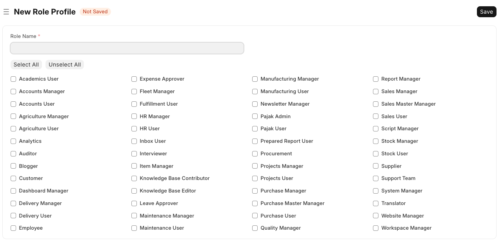

Modul Users (Pengguna)
Modul Users di ERP Siumang adalah pusat kendali untuk mengelola semua aspek terkait pengguna, peran, dan hak akses dalam sistem Anda. Memastikan pengaturan pengguna yang benar adalah kunci untuk keamanan data dan kelancaran operasional.
Di halaman ini, Anda akan menemukan panduan terperinci untuk mengelola pengguna, peran, dan mengonfigurasi izin secara efektif.
 Gambar: Tampilan umum halaman Modul Users.
Gambar: Tampilan umum halaman Modul Users.
Users
Bagian ini mencakup pengelolaan akun pengguna, peran, profil peran, dan profil modul untuk mengontrol akses dan tampilan antarmuka.
1. User (Pengguna)
Mengelola daftar semua pengguna yang memiliki akses ke sistem ERP Siumang.
Tujuan:
- Membuat dan mengelola akun pengguna sistem.
- Mengatur informasi dasar pengguna seperti nama, email, dan status aktif.
Cara Menggunakan:
- Navigasi ke:
Modul Users > Users > Useratau ketik "User" di Awesome Bar. - Untuk menambah pengguna baru, klik tombol "Add User" atau "Baru". Isi detail yang diperlukan seperti nama lengkap, alamat email, dan peran.
- Untuk mengedit pengguna, klik pada nama pengguna di daftar. Anda dapat memperbarui informasi, menetapkan ulang kata sandi, atau mengubah status aktif/nonaktif.
Membuat Pengguna Baru
Menambahkan pengguna baru ke sistem ERP Siumang adalah proses yang sederhana dan cepat, memungkinkan Anda untuk memperluas akses tim Anda dengan mudah. Ikuti panduan langkah demi langkah di bawah ini untuk membuat akun pengguna baru.
Langkah 1: Mengakses Halaman Daftar Pengguna
Sebelum membuat pengguna baru, pastikan Anda berada di halaman yang tepat. Navigasikan ke daftar pengguna di sistem Anda.
- Dari *Awesome Bar* (bilah pencarian di bagian atas), ketik "User" dan pilih opsi "User List".
- Atau, jika Anda berada di Modul Users, Anda dapat mengklik "Users" lalu "User".
Langkah 2: Memulai Pembuatan Pengguna Baru
Setelah berada di halaman daftar pengguna, Anda akan menemukan opsi untuk menambahkan entri baru.
- Di pojok kanan atas halaman daftar pengguna, cari dan klik tombol "+ Add User" atau "Tambah Pengguna".
- Sebuah jendela pop-up "New User" atau "Pengguna Baru" akan muncul, siap untuk Anda isi.
Langkah 3: Mengisi Detail Dasar Pengguna
Jendela "New User" meminta informasi penting untuk membuat akun pengguna. Pastikan untuk mengisi field-field wajib yang ditandai dengan tanda bintang merah.
- Email: Masukkan alamat email pengguna. Ini akan menjadi *username* utama mereka untuk login ke sistem.
- First Name: Isi nama depan pengguna.
- Role Profile: Pilih profil peran yang sesuai untuk pengguna ini dari daftar *dropdown*. Profil peran akan menentukan hak akses dan modul yang dapat dilihat pengguna. Anda bisa memilih satu atau lebih peran.
- Setelah mengisi detail dasar ini, Anda memiliki dua pilihan:
- Save: Klik tombol "Save" untuk menyimpan pengguna dengan detail yang telah Anda masukkan. Sistem akan membuat akun dan mengirimkan email notifikasi kepada pengguna untuk mengatur kata sandi mereka.
- Edit Full Form: Jika Anda perlu mengisi detail lebih lanjut seperti informasi kontak, alamat, atau pengaturan izin yang lebih spesifik, klik "Edit Full Form". Ini akan membuka formulir pengguna lengkap di halaman terpisah.
Langkah 4: Konfirmasi dan Pemberitahuan
Setelah Anda menyimpan pengguna baru, sistem akan memproses pembuatan akun.
Pengguna yang baru dibuat akan menerima email dengan instruksi untuk mengatur kata sandi mereka dan mulai menggunakan sistem. Pastikan mereka memeriksa folder spam jika email tidak langsung terlihat di kotak masuk.
Dengan mengikuti langkah-langkah ini, Anda dapat dengan mudah dan efisien menambahkan pengguna baru ke ERP Siumang, memberdayakan tim Anda dengan akses yang sesuai ke sistem.
Detail Pengguna (User Details Tab)
Tab User Details adalah bagian utama dalam formulir pengguna baru atau yang sudah ada, tempat Anda mengelola informasi dasar dan status akun pengguna. Pengaturan di sini sangat penting untuk identifikasi dan akses pengguna dalam sistem.
Status Akun
- Enabled:
Fungsi: Kotak centang ini mengontrol status aktivasi akun pengguna. Jika dicentang, pengguna dapat login ke sistem. Jika tidak dicentang, akun pengguna dinonaktifkan dan mereka tidak dapat login, sehingga mengendalikan apakah pengguna memiliki akses aktif ke ERP Siumang.
Cara Input: Centang kotak ini untuk mengaktifkan akun, atau biarkan tidak dicentang untuk menonaktifkan.
Basic Info (Informasi Dasar)
Bagian ini berisi detail identitas utama pengguna.
- Email *:
Fungsi: Alamat email pengguna. Ini adalah field wajib dan akan berfungsi sebagai identifikasi utama (username) untuk login ke sistem, serta digunakan untuk notifikasi sistem dan komunikasi email.
Cara Input: Masukkan alamat email yang valid dan unik untuk setiap pengguna.
- Full Name:
Fungsi: Nama lengkap pengguna. Field ini biasanya terisi otomatis berdasarkan "First Name", "Middle Name", dan "Last Name", tetapi dapat disesuaikan secara manual. Nama lengkap ini digunakan untuk tampilan nama pengguna di seluruh antarmuka dan laporan.
Cara Input: Biasanya terisi otomatis. Dapat diedit jika diperlukan.
- Language:
Fungsi: Menentukan bahasa antarmuka pengguna spesifik untuk akun ini, yang akan mengesampingkan pengaturan bahasa global di System Settings jika diatur. Ini mengubah bahasa tampilan untuk pengguna individu ini.
Cara Input: Pilih bahasa yang diinginkan dari daftar *dropdown* (misal: "English", "Bahasa Indonesia").
- First Name *:
Fungsi: Nama depan pengguna. Ini adalah field wajib yang digunakan bersama nama lain untuk membentuk "Full Name".
Cara Input: Masukkan nama depan pengguna.
- Username:
Fungsi: Nama pengguna unik untuk login. Secara default, ini sering kali dihasilkan dari alamat email atau nama depan pengguna, tetapi dapat diubah. Ini berfungsi sebagai identifikasi alternatif untuk login, terutama jika login email dinonaktifkan.
Cara Input: Dapat diisi otomatis atau diatur secara manual. Pastikan unik.
- Time Zone:
Fungsi: Menentukan zona waktu spesifik untuk pengguna ini, yang akan mengesampingkan pengaturan zona waktu global di System Settings jika diatur. Ini memastikan stempel waktu pada aktivitas dan transaksi pengguna ini ditampilkan sesuai zona waktu pribadi mereka.
Cara Input: Pilih zona waktu yang sesuai dari daftar *dropdown* (misal: "Asia/Jakarta").
- Middle Name:
Fungsi: Nama tengah pengguna (opsional) yang berkontribusi pada pembentukan "Full Name".
Cara Input: Masukkan nama tengah jika ada.
- Last Name:
Fungsi: Nama belakang pengguna (opsional) yang berkontribusi pada pembentukan "Full Name".
Cara Input: Masukkan nama belakang jika ada.
Peran & Izin (Roles & Permissions Tab)
Tab Roles & Permissions adalah tempat Anda menetapkan peran kepada pengguna, yang secara langsung memengaruhi hak akses dan fungsionalitas yang dapat diakses oleh pengguna tersebut dalam sistem. Penetapan peran yang tepat sangat krusial untuk keamanan data dan memastikan setiap pengguna memiliki izin yang sesuai dengan tanggung jawab pekerjaan mereka.
Roles (Peran)
Bagian ini memungkinkan Anda untuk menetapkan satu atau beberapa peran kepada pengguna. Setiap peran memiliki sekumpulan izin yang telah ditentukan sebelumnya.
- Role Profile:
Fungsi: Field ini memungkinkan Anda untuk memilih profil peran yang telah dikonfigurasi sebelumnya. Profil peran adalah kumpulan dari beberapa peran yang sering ditetapkan bersamaan. Memilih profil peran akan secara otomatis mencentang semua peran yang termasuk dalam profil tersebut, menyederhanakan proses penetapan izin.
Cara Input: Ketik nama profil peran yang ingin Anda terapkan, lalu pilih dari daftar saran yang muncul. Anda juga dapat menghapus profil peran yang sudah ada dengan mengklik ikon 'x' di samping nama profil.
Daftar Peran
Di bawah "Role Profile", Anda akan melihat daftar lengkap semua peran yang tersedia di sistem. Anda dapat secara manual mencentang atau menghilangkan centang pada peran-peran ini untuk memberikan atau mencabut hak akses spesifik.
- Select All / Unselect All:
Fungsi: Tombol-tombol ini memungkinkan Anda untuk dengan cepat mencentang semua peran atau menghilangkan centang dari semua peran dalam daftar. Ini berguna untuk pengaturan awal atau jika Anda ingin memulai dari nol dalam menetapkan peran.
Cara Input: Klik "Select All" untuk memilih semua peran, atau "Unselect All" untuk menghapus semua pilihan peran.
- Daftar Checkbox Peran Individual:
Fungsi: Setiap peran diwakili oleh sebuah checkbox. Mencentang sebuah peran akan memberikan semua izin yang terkait dengan peran tersebut kepada pengguna. Menghilangkan centang akan mencabut izin tersebut.
Cara Input: Klik pada checkbox di samping nama peran (misal: "Sales Manager", "Stock User", "Accounts Manager") untuk memilih atau membatalkan pilihan peran tersebut.
Contoh: Jika Anda mencentang "Sales Manager" dan "Stock User", pengguna akan memiliki semua izin yang terkait dengan kedua peran tersebut, memungkinkan mereka untuk melakukan tugas-tugas penjualan dan manajemen stok.
Setelah Anda selesai menetapkan peran, pastikan untuk menyimpan perubahan pada formulir pengguna. Peran yang ditetapkan akan langsung memengaruhi kemampuan pengguna untuk mengakses dan berinteraksi dengan berbagai bagian dan dokumen dalam sistem ERP Siumang.
Informasi Lebih Lanjut (More Information Tab)
Tab More Information memungkinkan Anda untuk mencatat detail tambahan mengenai pengguna yang mungkin tidak secara langsung terkait dengan fungsionalitas sistem, tetapi penting untuk catatan internal atau referensi. Informasi ini membantu dalam pengelolaan data karyawan atau kontak yang lebih komprehensif.
Detail Pribadi & Kontak
Bagian ini berisi field-field untuk informasi pribadi dan detail kontak tambahan pengguna.
- Gender:
Fungsi: Menentukan jenis kelamin pengguna. Ini adalah field opsional yang dapat digunakan untuk keperluan demografi atau pelaporan internal.
Cara Input: Pilih jenis kelamin dari daftar *dropdown* (misal: "Male", "Female", "Other").
- Phone:
Fungsi: Nomor telepon utama pengguna. Dapat digunakan untuk kontak darurat atau komunikasi bisnis.
Cara Input: Masukkan nomor telepon lengkap, termasuk kode area jika relevan.
- Mobile No:
Fungsi: Nomor telepon seluler pengguna. Sering digunakan untuk komunikasi yang lebih langsung atau notifikasi SMS jika diintegrasikan.
Cara Input: Masukkan nomor telepon seluler lengkap.
- Birth Date:
Fungsi: Tanggal lahir pengguna. Berguna untuk catatan demografi, perayaan ulang tahun, atau kebijakan terkait usia.
Cara Input: Pilih tanggal dari kalender pop-up.
- Location:
Fungsi: Lokasi fisik atau geografis pengguna. Ini bisa menjadi alamat kantor, kota, atau wilayah tempat pengguna sering bekerja.
Cara Input: Masukkan detail lokasi (misal: "Jakarta", "Kantor Pusat", "Remote").
Informasi Tambahan
Bagian ini menyediakan ruang untuk detail naratif atau deskriptif mengenai pengguna.
- Interests:
Fungsi: Bidang ini dapat digunakan untuk mencatat minat atau hobi pengguna. Meskipun tidak langsung memengaruhi fungsionalitas ERP, ini bisa berguna untuk membangun profil karyawan yang lebih lengkap atau untuk kegiatan internal perusahaan.
Cara Input: Masukkan teks bebas yang menjelaskan minat pengguna.
- Bio:
Fungsi: Bidang teks panjang untuk biografi singkat atau deskripsi diri pengguna. Ini bisa mencakup latar belakang profesional, keahlian khusus, atau informasi relevan lainnya.
Cara Input: Masukkan teks bebas yang lebih panjang untuk biografi pengguna.
Setelah mengisi semua informasi yang relevan di tab ini, pastikan untuk menyimpan perubahan pada formulir pengguna. Data ini akan tersimpan sebagai bagian dari profil pengguna dan dapat diakses kapan saja untuk referensi.
Pengaturan (Settings Tab)
Tab Settings adalah pusat konfigurasi bagi pengguna untuk menyesuaikan pengalaman mereka dalam sistem ERP Siumang. Bagian ini memungkinkan penyesuaian tampilan, navigasi, keamanan, dan integrasi, memberikan kontrol yang lebih personal atas cara pengguna berinteraksi dengan aplikasi.
Kategori Pengaturan
Setiap kategori pengaturan dapat diperluas (dengan mengklik panah ke bawah) untuk menampilkan opsi-opsi spesifik di dalamnya.
- Desk Settings:
Fungsi: Mengatur preferensi terkait tampilan dan fungsionalitas "Desk" atau halaman utama pengguna. Ini mungkin termasuk pengaturan tata letak, widget yang ditampilkan, atau pintasan favorit.
Detail:
- Mute Sounds: Centang kotak ini untuk menonaktifkan semua suara notifikasi atau suara lain yang dihasilkan oleh sistem saat pengguna berinteraksi dengan "Desk".
- Desk Theme: Pilih tema visual untuk "Desk" pengguna dari daftar *dropdown*. Opsi yang umum adalah "Light" (terang) atau "Dark" (gelap), yang mengubah skema warna antarmuka.
- Banner Image: Memungkinkan pengguna untuk mengunggah atau memilih gambar yang akan ditampilkan sebagai banner di bagian atas "Desk". Ini dapat digunakan untuk personalisasi atau branding internal.
- Navigation Settings:
Fungsi: Mengelola bagaimana pengguna menavigasi dalam sistem. Ini bisa mencakup pengaturan bilah sisi (sidebar), menu favorit, atau pintasan navigasi cepat.
Detail:
- Search Bar: Centang kotak ini untuk menampilkan bilah pencarian di antarmuka pengguna, memungkinkan pencarian cepat untuk dokumen, modul, atau informasi lainnya.
- Notifications: Centang kotak ini untuk mengaktifkan notifikasi sistem yang muncul di antarmuka pengguna, seperti notifikasi pesan baru, tugas yang jatuh tempo, atau pembaruan dokumen.
- List Settings:
Fungsi: Mengatur tampilan daftar dokumen (misalnya, daftar Penjualan, daftar Pembelian). Ini mungkin termasuk jumlah item per halaman, kolom yang ditampilkan secara default, atau filter yang disimpan.
Detail:
- Sidebar: Centang kotak ini untuk menampilkan bilah sisi (sidebar) di tampilan daftar, yang biasanya berisi filter cepat, kategori, atau opsi terkait daftar.
- Bulk Actions: Centang kotak ini untuk mengaktifkan opsi "Bulk Actions" (Tindakan Massal) di tampilan daftar, memungkinkan pengguna untuk melakukan operasi pada beberapa item sekaligus (misalnya, menghapus atau mengubah status beberapa dokumen).
- View Switcher: Centang kotak ini untuk menampilkan "View Switcher" (Pengalih Tampilan), yang memungkinkan pengguna beralih antara berbagai tampilan daftar (misalnya, tampilan daftar, tampilan kartu, tampilan kalender).
- Form Settings:
Fungsi: Menyesuaikan perilaku dan tampilan formulir entri data (misalnya, formulir Invoice Penjualan, formulir Item). Ini bisa mencakup pengaturan untuk validasi, urutan field, atau opsi penyimpanan otomatis.
Detail:
- Sidebar: Centang kotak ini untuk menampilkan bilah sisi (sidebar) di tampilan formulir, yang mungkin berisi informasi terkait, riwayat, atau pintasan ke dokumen terkait.
- Timeline: Centang kotak ini untuk menampilkan bagian "Timeline" di formulir, yang menunjukkan riwayat aktivitas dan perubahan pada dokumen tersebut (misalnya, siapa yang membuat, mengedit, atau mengomentari dokumen).
- Dashboard: Centang kotak ini untuk menampilkan "Dashboard" terkait di formulir, yang mungkin berisi ringkasan data atau metrik relevan untuk dokumen yang sedang dilihat.
- Change Password:
Fungsi: Memungkinkan pengguna untuk mengubah kata sandi akun mereka. Ini adalah fitur keamanan penting untuk menjaga integritas akun.
Detail:
- Set New Password: Field untuk memasukkan kata sandi baru. Biasanya akan ada ikon mata untuk menampilkan atau menyembunyikan kata sandi.
- Logout From All Devices After Changing Password: Centang kotak ini untuk secara otomatis mengeluarkan pengguna dari semua sesi aktif di perangkat lain setelah kata sandi berhasil diubah. Ini adalah praktik keamanan yang baik.
- Document Follow:
Fungsi: Mengelola notifikasi yang diterima pengguna terkait perubahan pada dokumen tertentu yang mereka "ikuti". Ini membantu pengguna tetap update dengan progres atau modifikasi penting.
Detail:
- Send Notifications For Documents Followed By Me: Centang kotak ini untuk mengaktifkan notifikasi email atau dalam aplikasi ketika ada pembaruan pada dokumen yang telah ditandai untuk diikuti oleh pengguna.
- Email:
Fungsi: Mengkonfigurasi pengaturan email pribadi pengguna, seperti alamat email pengirim default, tanda tangan email, atau integrasi dengan server email eksternal.
Detail:
- Email Signature: Kotak teks untuk memasukkan tanda tangan email yang akan secara otomatis ditambahkan ke setiap email yang dikirim oleh pengguna dari sistem.
- Send Notifications For Email Threads: Centang kotak ini untuk menerima notifikasi ketika ada balasan atau aktivitas baru dalam utas email yang melibatkan pengguna.
- Send Me A Copy of Outgoing Emails: Centang kotak ini untuk secara otomatis mengirim salinan (Cc/Bcc) dari setiap email yang dikirim pengguna dari sistem ke alamat email mereka sendiri.
- Allowed In Mentions: Centang kotak ini untuk memungkinkan pengguna lain menyebut (mention) pengguna ini dalam komentar atau diskusi, yang akan memicu notifikasi kepada pengguna ini.
- User Emails: Bagian ini biasanya menampilkan daftar akun email yang terhubung dengan pengguna, memungkinkan penambahan atau pengelolaan akun email eksternal yang dapat digunakan untuk mengirim dan menerima email melalui sistem.
- Workspace:
Fungsi: Menyesuaikan tampilan dan fungsionalitas "Workspace" atau modul kerja pengguna. Mirip dengan Desk Settings, tetapi mungkin lebih spesifik untuk modul tertentu.
Detail:
- Default Workspace: Pilih *workspace* default yang akan ditampilkan kepada pengguna setelah login. Jika dikosongkan, *workspace* terakhir yang dikunjungi akan menjadi *default*.
- App:
Fungsi: Pengaturan umum terkait aplikasi atau klien yang digunakan pengguna, seperti preferensi notifikasi aplikasi, tema, atau mode gelap/terang.
Detail:
- Default App: Pilih aplikasi default yang akan dialihkan kepada pengguna setelah login. Ini berguna dalam lingkungan multi-aplikasi.
- Security Settings:
Fungsi: Mengelola pengaturan keamanan tambahan untuk akun pengguna, seperti otentikasi dua faktor (2FA), log aktivitas login, atau sesi aktif.
Detail:
- Simultaneous Sessions: Atur jumlah maksimum sesi login bersamaan yang diizinkan untuk pengguna ini. Jika melebihi batas, sesi tertua mungkin akan dikeluarkan.
- Login After: Tentukan jam (dalam format 24 jam) setelah itu pengguna diizinkan untuk login. Misalnya, "8" berarti pengguna hanya bisa login setelah jam 8 pagi.
- Login Before: Tentukan jam (dalam format 24 jam) sebelum itu pengguna diizinkan untuk login. Misalnya, "17" berarti pengguna hanya bisa login sebelum jam 5 sore.
- Restrict IP: Masukkan daftar alamat IP yang diizinkan untuk login. Pengguna hanya dapat login dari alamat IP yang tercantum di sini. Beberapa alamat IP dapat dipisahkan dengan koma.
- User Type: Menampilkan jenis pengguna. Jika pengguna memiliki peran yang dicentang, mereka adalah "System User" dan memiliki akses ke desktop sistem.
- Third Party Authentication:
Fungsi: Mengkonfigurasi integrasi dengan penyedia otentikasi pihak ketiga (misalnya, Google, Microsoft, LDAP) jika sistem mendukungnya. Ini memungkinkan pengguna untuk login menggunakan kredensial dari layanan eksternal.
Detail: Bagian ini akan berisi opsi untuk menghubungkan atau memutuskan akun dari layanan otentikasi pihak ketiga yang telah dikonfigurasi di tingkat sistem. Pengguna dapat melihat status koneksi mereka ke layanan seperti Google, Microsoft, atau lainnya.
- API Access:
Fungsi: Mengelola kunci API dan token akses untuk pengguna ini, memungkinkan aplikasi eksternal atau skrip untuk berinteraksi dengan data ERP Siumang atas nama pengguna ini.
Detail: Bagian ini memungkinkan pengguna untuk membuat, melihat, atau mencabut kunci API dan rahasia API mereka. Kunci ini penting untuk integrasi dengan aplikasi eksternal atau untuk mengembangkan skrip kustom yang berinteraksi dengan sistem secara terprogram.
- Generate API Key: Tombol untuk membuat pasangan kunci API dan rahasia API baru.
- API Secret: Rahasia API yang terkait dengan kunci API, digunakan untuk otentikasi dalam panggilan API.
- API Key List: Daftar kunci API yang sudah ada untuk pengguna ini, dengan opsi untuk mengelola atau mencabutnya.
Pengaturan ini memberikan fleksibilitas yang besar bagi setiap pengguna untuk mengoptimalkan pengalaman mereka sesuai dengan kebutuhan dan preferensi pribadi, meningkatkan efisiensi dan kenyamanan dalam penggunaan sistem ERP Siumang.
Koneksi (Connections Tab)
Tab Connections adalah pusat untuk mengelola berbagai tautan dan relasi data yang terkait dengan pengguna dalam sistem ERP Siumang. Bagian ini menyediakan akses cepat ke profil terkait seperti Kontak atau Blogger, log aktivitas pengguna seperti log akses dan aktivitas, pengaturan izin khusus pengguna, serta integrasi eksternal seperti cache token. Ini memungkinkan pengguna untuk melihat gambaran menyeluruh tentang bagaimana akun mereka terhubung dengan berbagai aspek data dan fungsionalitas dalam sistem, meningkatkan transparansi dan kemudahan navigasi ke informasi terkait.
Profil (Profile)
Bagian ini menampilkan tautan ke profil terkait pengguna dalam sistem.
- Contact :
Fungsi: Tautan ke dokumen Kontak yang terkait dengan pengguna ini. Jika pengguna adalah seorang kontak dalam daftar kontak Anda, tautan ini akan membawa Anda langsung ke detail kontak tersebut. Ini berguna untuk melihat informasi kontak lengkap, riwayat komunikasi, atau transaksi terkait.
Cara Penggunaan: Klik tombol "+" untuk menambahkan tautan ke Kontak baru jika belum ada, atau klik nama "Contact" untuk melihat detail kontak yang sudah ada.
- Blogger :
Fungsi: Tautan ke profil Blogger yang terkait dengan pengguna ini. Jika pengguna memiliki peran sebagai blogger dalam sistem, tautan ini akan mengarahkan Anda ke profil blog mereka, di mana Anda dapat melihat postingan, statistik, atau pengaturan blog.
Cara Penggunaan: Klik tombol "+" untuk menambahkan tautan ke profil Blogger baru jika relevan, atau klik nama "Blogger" untuk melihat detail profil blogger yang sudah ada.
Log (Logs)
Bagian ini menyediakan akses ke berbagai catatan log aktivitas pengguna.
- Access Log :
Fungsi: Menampilkan catatan detail setiap kali pengguna login atau mencoba login ke sistem, termasuk stempel waktu, alamat IP, dan status keberhasilan/kegagalan. Ini penting untuk audit keamanan dan melacak aktivitas login.
Cara Penggunaan: Klik "Access Log" untuk membuka daftar log akses pengguna ini.
- Activity Log :
Fungsi: Menyediakan riwayat lengkap semua tindakan yang dilakukan oleh pengguna dalam sistem, seperti pembuatan dokumen, modifikasi, penghapusan, atau interaksi lainnya. Ini sangat berguna untuk pelacakan perubahan dan akuntabilitas.
Cara Penggunaan: Klik "Activity Log" untuk melihat daftar aktivitas pengguna ini.
- Energy Point Log :
Fungsi: Mencatat poin energi yang diperoleh atau digunakan oleh pengguna. Poin energi adalah fitur gamifikasi yang dapat digunakan untuk memotivasi pengguna atau melacak kontribusi mereka dalam sistem.
Cara Penggunaan: Klik "Energy Point Log" untuk melihat riwayat poin energi pengguna ini.
- Route History :
Fungsi: Menampilkan riwayat navigasi pengguna dalam sistem, mencatat halaman atau modul mana yang telah mereka kunjungi. Ini dapat membantu dalam memahami pola penggunaan atau memecahkan masalah navigasi.
Cara Penggunaan: Klik "Route History" untuk melihat jalur navigasi pengguna ini.
Pengaturan (Settings)
Bagian ini berisi tautan ke pengaturan spesifik yang terkait dengan pengguna.
- User Permission :
Fungsi: Tautan langsung ke pengaturan izin spesifik pengguna ini. Meskipun peran menetapkan izin umum, "User Permission" memungkinkan penyesuaian izin yang lebih granular untuk dokumen atau modul tertentu yang mungkin tidak tercakup oleh peran default.
Cara Penggunaan: Klik tombol "+" untuk menambahkan izin pengguna baru atau klik "User Permission" untuk mengelola izin yang sudah ada.
- Document Follow :
Fungsi: Tautan ke daftar dokumen yang sedang diikuti oleh pengguna ini. Pengaturan ini memungkinkan pengguna untuk menerima notifikasi tentang perubahan atau pembaruan pada dokumen-dokumen tertentu yang penting bagi mereka.
Cara Penggunaan: Klik "Document Follow" untuk melihat dan mengelola dokumen yang diikuti oleh pengguna ini.
Aktivitas (Activity)
Bagian ini menampilkan tautan ke aktivitas yang terkait dengan pengguna.
- Communication :
Fungsi: Tautan ke semua komunikasi (email, pesan internal, komentar) yang terkait dengan pengguna ini. Ini memberikan gambaran terpusat tentang interaksi komunikasi pengguna dalam sistem.
Cara Penggunaan: Klik tombol "+" untuk memulai komunikasi baru atau klik "Communication" untuk melihat riwayat komunikasi yang ada.
- ToDo :
Fungsi: Tautan ke daftar tugas (ToDo) yang ditetapkan kepada atau dibuat oleh pengguna ini. Ini membantu dalam mengelola dan melacak tugas-tugas yang belum selesai.
Cara Penggunaan: Klik tombol "+" untuk menambahkan tugas baru atau klik "ToDo" untuk melihat daftar tugas yang ada.
Integrasi (Integrations)
Bagian ini mengelola aspek integrasi teknis.
- Token Cache :
Fungsi: Menampilkan informasi tentang token otentikasi yang disimpan (cached) untuk pengguna ini. Ini relevan untuk integrasi dengan layanan eksternal yang menggunakan token untuk otentikasi, dan dapat digunakan untuk memecahkan masalah konektivitas.
Cara Penggunaan: Klik "Token Cache" untuk melihat detail token yang disimpan.
2. Role (Peran)
Mengelola peran yang mendefinisikan sekumpulan hak akses dalam sistem.
Tujuan:
- Mendefinisikan kelompok izin yang dapat ditetapkan ke pengguna.
- Menyederhanakan manajemen hak akses dengan mengelompokkan izin yang serupa.
Manajemen Peran (Role Management)
Manajemen peran adalah fitur krusial dalam ERP Siumang yang memungkinkan administrator untuk mengontrol hak akses dan fungsionalitas bagi berbagai kelompok pengguna. Dengan mendefinisikan peran, Anda dapat memastikan bahwa setiap pengguna hanya dapat mengakses data dan fitur yang relevan dengan tanggung jawab pekerjaan mereka, meningkatkan keamanan dan efisiensi operasional.
Daftar Peran (Role List)
Halaman daftar peran menampilkan semua peran yang telah dibuat dalam sistem, baik peran bawaan maupun peran kustom. Di sini, Anda dapat melihat gambaran umum setiap peran dan statusnya.
- ID:
Fungsi: Menampilkan nama unik dari setiap peran. Ini adalah pengidentifikasi utama untuk peran tersebut dalam sistem.
- Status:
Fungsi: Menunjukkan apakah peran tersebut "Enabled" (aktif) atau "Disabled" (dinonaktifkan). Peran yang dinonaktifkan tidak dapat ditetapkan kepada pengguna dan tidak memberikan hak akses.
- Is Custom:
Fungsi: Mengindikasikan apakah peran tersebut adalah peran kustom (dibuat oleh pengguna) atau peran bawaan sistem. Peran kustom dapat dimodifikasi atau dihapus, sedangkan peran bawaan biasanya memiliki batasan modifikasi.
- Desk Access:
Fungsi: Menunjukkan apakah pengguna dengan peran ini memiliki akses ke "Desk" atau halaman utama sistem. Jika dicentang, pengguna dapat melihat dan berinteraksi dengan dashboard utama.
- Last Updated On:
Fungsi: Menampilkan tanggal dan waktu terakhir peran tersebut diperbarui.
Menambah Peran Baru (Add New Role)
Untuk membuat peran baru, ikuti langkah-langkah berikut:
- Klik tombol Add Role yang terletak di kanan atas halaman daftar peran.
- Anda akan diarahkan ke halaman "New Role". Masukkan Role Name yang diinginkan (misalnya, "Sales Support", "Inventory Clerk").
- Setelah menulis nama peran, klik tombol Edit Full Role. Tombol ini akan muncul setelah Anda mengisi nama peran dan menyimpan draf awal peran tersebut.
Mengedit Peran Penuh (Edit Full Role)
Setelah mengklik "Edit Full Role", Anda akan dibawa ke halaman detail peran yang lebih komprehensif, di mana Anda dapat mengkonfigurasi berbagai aspek peran tersebut.
- Role Name *:
Fungsi: Nama unik dari peran. Ini adalah field wajib dan harus deskriptif agar mudah diidentifikasi.
Cara Input: Masukkan nama yang jelas untuk peran (misal: "Sales Manager", "HR Assistant").
- Disabled:
Fungsi: Jika dicentang, peran ini akan dinonaktifkan dan secara otomatis dihapus dari semua pengguna yang saat ini memiliki peran ini. Pengguna tersebut tidak lagi memiliki hak akses yang diberikan oleh peran ini.
Cara Input: Centang kotak ini untuk menonaktifkan peran.
- Home Page:
Fungsi: Menentukan halaman default yang akan dilihat pengguna dengan peran ini setelah login. Ini dapat berupa modul tertentu, dashboard kustom, atau halaman laporan.
Cara Input: Masukkan rute halaman (misal: "/app/sales-dashboard" atau biarkan kosong untuk default sistem).
- Is Custom:
Fungsi: Menunjukkan apakah peran ini adalah peran kustom yang Anda buat. Peran bawaan sistem tidak akan memiliki opsi ini untuk diedit.
Cara Input: Ini adalah indikator, tidak dapat diubah secara langsung.
- Restrict To Domain:
Fungsi: Membatasi akses peran ini hanya untuk domain tertentu dalam sistem multi-domain. Ini berguna dalam lingkungan di mana satu instalasi ERP Siumang digunakan oleh beberapa entitas bisnis atau departemen yang berbeda.
Cara Input: Pilih domain dari daftar *dropdown* jika relevan.
- Desk Access:
Fungsi: Mengontrol apakah pengguna dengan peran ini dapat mengakses "Desk" atau halaman utama sistem. Jika dicentang, mereka dapat melihat dan berinteraksi dengan dashboard utama.
Cara Input: Centang kotak ini untuk memberikan akses Desk.
- Two Factor Authentication:
Fungsi: Jika dicentang, pengguna dengan peran ini akan diwajibkan untuk menggunakan otentikasi dua faktor (2FA) saat login, menambahkan lapisan keamanan ekstra.
Cara Input: Centang kotak ini untuk mengaktifkan 2FA untuk peran ini.
Pengaturan Izin Peran (Role Permissions Manager)
Setelah mengisi detail dasar peran, Anda perlu mengkonfigurasi izin spesifik yang terkait dengan peran tersebut. Klik tombol Role Permissions Manager di kanan atas halaman "New Role" untuk mengakses pengaturan izin yang lebih detail.
Di sini, Anda dapat menentukan dokumen (misalnya, Sales Order, Purchase Invoice, Item) dan jenis operasi (Create, Read, Update, Delete, Submit, Cancel, dll.) yang diizinkan untuk peran ini. Ini adalah bagian paling penting dalam mendefinisikan hak akses peran.
Setelah semua konfigurasi selesai, pastikan untuk mengklik tombol Save untuk menyimpan peran baru atau perubahan pada peran yang sudah ada.
3. Role Profile (Profil Peran)
Memungkinkan Anda mengelompokkan beberapa peran menjadi satu profil yang dapat ditetapkan ke pengguna.
Tujuan:
- Menyederhanakan penetapan banyak peran ke satu pengguna.
- Mengelola kombinasi peran yang sering digunakan.
Manajemen Profil Peran (Role Profile Management)
Fitur Role Profile dalam ERP Siumang dirancang untuk menyederhanakan proses penetapan peran kepada pengguna. Bayangkan Anda memiliki beberapa peran yang sering kali diberikan bersamaan kepada satu jenis pengguna, misalnya, seorang "Manajer Penjualan" yang juga membutuhkan akses sebagai "Pengguna Stok" dan "Pengguna Laporan". Daripada harus mencentang ketiga peran tersebut satu per satu setiap kali Anda membuat atau mengedit akun pengguna baru, Anda dapat mengelompokkan peran-peran ini ke dalam satu "Profil Peran".
Dengan menggunakan Role Profile, Anda dapat membuat template kumpulan peran yang dapat diterapkan dengan cepat. Ini sangat menghemat waktu dan mengurangi potensi kesalahan, terutama dalam organisasi besar dengan banyak pengguna dan kombinasi peran yang kompleks. Ini adalah alat yang ampuh untuk standarisasi penetapan izin dan memastikan konsistensi di seluruh sistem.
Daftar Profil Peran (Role Profile List)
Halaman ini menampilkan semua profil peran yang telah Anda buat, memberikan gambaran singkat tentang nama profil dan kapan terakhir kali diperbarui.
- Role Name:
Fungsi: Nama unik dari profil peran. Nama ini harus deskriptif agar mudah dipahami peran-peran apa saja yang tergabung di dalamnya.
- ID:
Fungsi: Pengidentifikasi internal untuk profil peran.
- Last Updated On:
Fungsi: Menunjukkan tanggal dan waktu terakhir profil peran ini dimodifikasi.
Langkah-langkah Membuat Profil Peran Baru
Untuk membuat profil peran yang disesuaikan dengan kebutuhan Anda, ikuti langkah-langkah mudah ini:
-
Klik Tombol "Add Role Profile"
Dari halaman daftar Profil Peran, cari dan klik tombol Add Role Profile yang terletak di sudut kanan atas. Ini akan membawa Anda ke formulir pembuatan profil baru.
-
Isi Nama Profil Peran
Anda akan melihat halaman "New Role Profile". Pada field Role Name *, masukkan nama yang jelas dan deskriptif untuk profil peran Anda (misalnya, "Sales Team Default", "Finance Department Access"). Nama ini akan muncul saat Anda memilih profil peran untuk pengguna.
 Gambar: Formulir New Role Profile dengan field Role Name. -
Pilih Peran yang Ingin Dimasukkan
Di bawah field "Role Name", Anda akan menemukan daftar lengkap semua peran yang tersedia dalam sistem. Ini adalah inti dari pembuatan profil peran, di mana Anda memilih peran-peran yang akan menjadi bagian dari profil ini.
-
Opsi Cepat:
-
Daftar Peran yang Tersedia:
Cara Input: Centang kotak di samping setiap peran yang ingin Anda sertakan dalam profil ini. Anda dapat menggunakan tombol "Select All" atau "Unselect All" untuk mempercepat proses pemilihan.
-
Opsi Cepat:
-
Simpan Profil Peran Anda
Setelah Anda selesai memilih semua peran yang relevan untuk profil ini, klik tombol Save yang terletak di kanan atas halaman. Profil peran Anda kini siap digunakan dan dapat diterapkan kepada pengguna baru atau yang sudah ada melalui tab "Roles & Permissions" di formulir pengguna.
Permissions
Bagian ini berfokus pada alat dan laporan yang lebih spesifik untuk manajemen izin dan hak akses data.
Pengelola Izin Peran (Role Permission Manager)
Pengelola Izin Peran (Role Permission Manager) adalah inti dari sistem keamanan berbasis peran. Ini memungkinkan administrator untuk mendefinisikan apa yang dapat dilakukan oleh setiap peran dalam sistem, pada tingkat dokumen (DocType).
Dengan mengelola izin peran, Anda dapat memastikan bahwa pengguna hanya memiliki akses ke fungsionalitas dan data yang relevan dengan tanggung jawab pekerjaan mereka, meningkatkan keamanan dan efisiensi operasional.
Mengelola Izin Peran
Antarmuka Pengelola Izin Peran memungkinkan Anda untuk mengatur hak akses untuk setiap peran pada berbagai Tipe Dokumen. Anda dapat memilih Tipe Dokumen dan Peran untuk melihat dan memodifikasi izin yang terkait.
Tampilan antarmuka Pengelola Izin Peran.
- 1. Pilih Tipe Dokumen dan Peran:
Gunakan bidang "Document Type" dan "Role" untuk memilih kombinasi dokumen dan peran yang ingin Anda kelola izinnya.
- 2. Konfigurasi Izin:
Untuk setiap baris yang mewakili kombinasi Tipe Dokumen dan Peran, Anda dapat mencentang kotak untuk memberikan hak akses berikut:
- Select: Memungkinkan pengguna untuk memilih dokumen.
- Read (Baca): Memungkinkan pengguna untuk melihat dokumen.
- Write (Tulis): Memungkinkan pengguna untuk membuat dan mengedit dokumen.
- Create (Buat): Memungkinkan pengguna untuk membuat dokumen baru.
- Delete (Hapus): Memungkinkan pengguna untuk menghapus dokumen.
- Print (Cetak): Memungkinkan pengguna untuk mencetak dokumen.
- Email (Email): Memungkinkan pengguna untuk mengirim dokumen melalui email.
- Report (Laporan): Memungkinkan pengguna untuk melihat laporan terkait dokumen.
- Import (Impor): Memungkinkan pengguna untuk mengimpor data dokumen.
- Export (Ekspor): Memungkinkan pengguna untuk mengekspor data dokumen.
- Share (Bagikan): Memungkinkan pengguna untuk berbagi dokumen.
Anda juga dapat mencentang "Only If Creator" jika izin hanya berlaku untuk dokumen yang dibuat oleh pengguna tersebut.
- 3. Tambah Aturan Baru:
Klik tombol "Add A New Rule" untuk menambahkan baris izin baru untuk Tipe Dokumen atau Peran yang berbeda.
- 4. Atur Izin Pengguna:
Tombol "Set User Permissions" memungkinkan Anda untuk mengatur izin spesifik untuk pengguna individu, yang dapat lebih membatasi akses daripada izin peran.
Bantuan Cepat untuk Mengatur Izin
- 1. Izin diatur pada Peran dan Tipe Dokumen (disebut DocTypes) dengan mengatur hak Read, Write, Create, Delete, Submit, Cancel, Amend, Report, Import, Export, Print, Email, dan Set User Permissions.
- 2. Izin diterapkan pada Pengguna berdasarkan Peran yang ditugaskan kepada mereka.
- 3. Peran dapat diatur untuk pengguna dari Pengaturan Pengguna Anda.
Setup > User - 4. Sistem menyediakan banyak peran yang sudah ditentukan sebelumnya. Anda dapat menambahkan peran baru untuk pengaturan izin yang lebih baik.
Add a New Role - 5. Izin secara otomatis diterapkan ke Laporan Standar dan pencarian.
- 6. Sebagai praktik terbaik, jangan menetapkan kumpulan izin yang sama ke Peran yang berbeda. Sebaliknya, tetapkan beberapa Peran ke Pengguna yang sama.
Arti Submit, Cancel, Amend
- 1. Dokumen tertentu, seperti Faktur, tidak boleh diubah setelah final. Status final untuk dokumen tersebut disebut Submitted. Anda dapat membatasi Peran yang dapat Submit.
- 2. Anda dapat mengubah dokumen yang sudah Submitted dengan membatalkannya, lalu mengubahnya (amending).
- 3. Saat Anda Amend dokumen setelah Cancel dan menyimpannya, dokumen tersebut akan mendapatkan nomor baru yang merupakan versi dari nomor lama.
- 4. Contoh: jika Anda cancel dan amend INV004, itu akan menjadi dokumen baru INV004-1. Ini membantu Anda melacak setiap perubahan.
Tingkat Izin
- 1. Izin pada Level 0 adalah Izin Tingkat Dokumen, yaitu izin tersebut adalah akses utama ke dokumen.
- 2. Jika suatu Peran tidak memiliki akses pada Level 0, maka tingkat yang lebih tinggi tidak ada artinya.
- 3. Izin pada tingkat yang lebih tinggi adalah Izin Tingkat Bidang (Field Level Permissions). Semua Bidang memiliki Tingkat Izin yang ditetapkan terhadapnya dan aturan yang ditentukan pada izin tersebut berlaku untuk Bidang ini. Ini berguna jika Anda ingin menyembunyikan atau membuat bidang tertentu hanya-baca untuk Peran tertentu.
- 4. Anda dapat menggunakan Formulir Kustom untuk mengatur tingkat pada bidang.
Setup > Customize Form
Izin Pengguna
- 1. Izin Pengguna digunakan untuk membatasi pengguna ke catatan spesifik.
Setup > User Permissions - 2. Pilih Tipe Dokumen spesifik yang Izin Penggunanya digunakan untuk membatasi akses.
- 3. Setelah Anda mengatur ini, pengguna hanya akan dapat mengakses dokumen (misalnya, Blog Post) di mana tautan tersebut ada (misalnya, Blogger).
- 4. Selain dari Manajer Sistem, peran dengan Set User Permissions dapat mengatur izin untuk pengguna lain untuk Tipe Dokumen tersebut.
Jika instruksi ini tidak membantu, silakan tambahkan saran Anda di GitHub Issues. Submit an Issue
Dengan memahami dan mengelola Pengelola Izin Peran, Anda dapat membangun struktur keamanan yang kuat dan fleksibel yang sesuai dengan kebutuhan organisasi Anda.
2. User Permissions (Izin Pengguna)
Mengatur izin spesifik untuk pengguna individu, yang bisa mengesampingkan atau menambah izin dari peran mereka.
Tujuan:
- Memberikan atau membatasi akses ke dokumen atau data tertentu untuk pengguna individu.
- Mengatasi kebutuhan izin yang sangat spesifik yang tidak dapat dipenuhi oleh izin berbasis peran.
Izin Pengguna (User Permission)
Izin Pengguna (User Permission) digunakan untuk membatasi akses pengguna ke catatan spesifik dalam sistem, bahkan jika peran mereka memberikan akses yang lebih luas. Ini memungkinkan kontrol granular atas data.
Daftar Izin Pengguna
Halaman ini menampilkan daftar semua izin pengguna yang telah dikonfigurasi. Setiap entri menunjukkan pengguna, jenis dokumen yang diizinkan (Allow), dan nilai spesifik yang diizinkan (For Value).
Tampilan daftar izin pengguna yang ada.
- ID: Pengidentifikasi unik untuk entri izin.
- User (Pengguna): Alamat email atau nama pengguna yang izinnya sedang dikonfigurasi.
- Allow (Izinkan): Jenis dokumen atau modul yang izinnya diterapkan (misalnya, "Item Group", "Customer").
- For Value (Untuk Nilai): Nilai spesifik dalam jenis dokumen yang diizinkan (misalnya, "Services", "Consumable" untuk "Item Group").
- Applicable For (Berlaku Untuk): Menunjukkan DocType atau modul mana izin ini berlaku.
- Last Updated On (Terakhir Diperbarui Pada): Tanggal terakhir izin diperbarui.
Anda dapat menggunakan tombol Add / Update, Bulk Delete, dan List View untuk mengelola daftar izin. Tombol + Add User Permission digunakan untuk menambahkan izin pengguna baru.
Menambah Izin Pengguna Baru
Saat menambahkan izin pengguna baru, Anda akan mengisi detail untuk menentukan batasan akses spesifik untuk pengguna tertentu.

Formulir untuk menambahkan izin pengguna baru.
- User (Pengguna): Pilih pengguna yang akan diberikan izin ini. Ini adalah bidang wajib.
- Allow (Izinkan): Tentukan jenis dokumen atau kategori yang akan diizinkan atau dibatasi. Ini adalah bidang wajib.
- For Value (Untuk Nilai): Masukkan nilai spesifik yang diizinkan untuk jenis dokumen yang dipilih. Ini adalah bidang wajib.
- Is Default (Apakah Default): Centang jika izin ini harus menjadi pengaturan default untuk pengguna tersebut.
- Advanced Control (Kontrol Lanjutan):
- Apply To All Document Types (Terapkan Ke Semua Tipe Dokumen): Centang opsi ini jika izin ini harus berlaku untuk semua jenis dokumen yang terkait dengan "Allow" dan "For Value" yang dipilih.
Setelah mengisi semua detail, klik tombol Save untuk menyimpan izin pengguna baru. Anda juga dapat melihat dokumen yang diizinkan dengan mengklik View Permitted Documents.
Izin Peran untuk Halaman dan Laporan (Role Permission for Page and Report)
Bagian ini memungkinkan Anda untuk mengelola izin akses untuk halaman dan laporan tertentu berdasarkan peran pengguna. Ini memberikan kontrol yang lebih halus atas apa yang dapat dilihat dan diakses oleh setiap peran dalam sistem.
Izin Peran untuk Halaman
Anda dapat menentukan peran mana yang memiliki akses ke halaman tertentu dalam sistem. Ini berguna untuk membatasi akses ke halaman administratif atau halaman sensitif lainnya.
Mengatur izin peran untuk halaman tertentu.
- Set Role For (Atur Peran Untuk): Pilih 'Page' dari dropdown.
- Page (Halaman): Masukkan atau pilih nama halaman yang ingin Anda atur izinnya (misalnya, "dashboard-view").
- Allow Roles (Izinkan Peran): Centang kotak di samping setiap peran yang diizinkan untuk mengakses halaman yang dipilih. Anda dapat menggunakan tombol "Select All" atau "Unselect All" untuk memudahkan pemilihan.
Setelah memilih halaman dan peran yang diizinkan, klik tombol Update untuk menyimpan perubahan. Anda juga dapat mengatur ulang ke pengaturan default dengan tombol Reset to defaults.
Izin Peran untuk Laporan
Bagian ini memungkinkan Anda untuk mengontrol peran mana yang dapat melihat laporan tertentu. Ini memastikan bahwa laporan sensitif atau laporan yang hanya relevan untuk peran tertentu dapat dibatasi aksesnya.
Mengatur izin peran untuk laporan tertentu.
- Set Role For (Atur Peran Untuk): Pilih 'Report' dari dropdown.
- Report (Laporan): Masukkan atau pilih nama laporan yang ingin Anda atur izinnya (misalnya, "Gross Profit").
- Enable Prepared Report (Aktifkan Laporan yang Disiapkan): Centang opsi ini jika Anda ingin mengaktifkan laporan yang telah disiapkan untuk peran yang dipilih.
- Allow Roles (Izinkan Peran): Centang kotak di samping setiap peran yang diizinkan untuk melihat laporan yang dipilih. Anda dapat menggunakan tombol "Select All" atau "Unselect All" untuk memudahkan pemilihan.
Setelah memilih laporan dan peran yang diizinkan, klik tombol Update untuk menyimpan perubahan. Anda juga dapat mengatur ulang ke pengaturan default dengan tombol Reset to defaults.
4. Permitted Documents For User (Dokumen yang Diizinkan untuk Pengguna)
Laporan yang menampilkan dokumen apa saja yang dapat diakses oleh pengguna tertentu, berdasarkan peran dan izin pengguna.
Tujuan:
- Memverifikasi dan mengaudit dokumen yang dapat diakses oleh pengguna tertentu.
- Membantu administrator dalam memecahkan masalah akses pengguna.
Cara Menggunakan:
- Navigasi ke:
Modul Users > Permissions > Permitted Documents For Useratau ketik "Permitted Documents For User" di Awesome Bar. - Pilih pengguna dari filter untuk melihat daftar dokumen yang dapat mereka akses.
5. Document Share Report (Laporan Berbagi Dokumen)
Menampilkan dokumen apa saja yang telah dibagikan secara spesifik kepada pengguna atau peran tertentu.
Tujuan:
- Melacak dokumen yang telah dibagikan secara ad-hoc kepada pengguna atau peran tertentu.
- Mengaudit siapa yang memiliki akses ke dokumen spesifik melalui fitur berbagi.
Cara Menggunakan:
- Navigasi ke:
Modul Users > Permissions > Document Share Reportatau ketik "Document Share Report" di Awesome Bar. - Laporan ini akan menunjukkan daftar dokumen yang dibagikan, kepada siapa dibagikan, dan jenis izin yang diberikan.